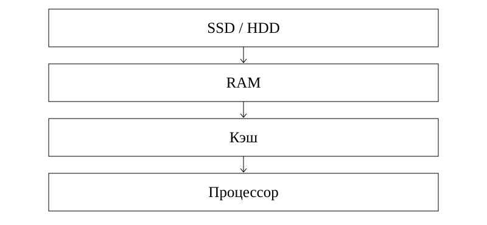

Компьютер жады
1. Оқу мақсаттары
RAM, ROM және кэш қызметін ажырату
Ұзақ сақтайтын құрылғыларды салыстыру
Сақталмаған деректің жоғалу себебін түсіндіру
2. Алдын ала білу қажет
Файл ұғымы
Бит және байт
Компьютерді қосу мен өшіру
3. Негізгі теория
Жадтың міндеті
Жад деректер мен программаларды сақтайды. Оқу моделінде ішкі жадқа RAM, ROM және кэш жатады. Сыртқы жад ұзақ сақтауға арналған тасымалдаушыларды қамтиды. «Сыртқы» сөзі міндетті түрде корпус сыртында дегенді білдірмейді: корпус ішіндегі SSD де ұзақ сақтау құрылғысы.
Дереккөз: S1:9-11; S3:16-20
RAM және сақталған файл
RAM іске қосылған программалардың жұмыс деректерін уақытша ұстайды. Қалыпты RAM электр қуатынсыз деректерін сақтамайды. Құжатты редакторда өзгерту мен оны дискіге сақтау екі бөлек әрекет. Автоматты сақтау болмаса, сақталмаған түзетулер қуат үзілгенде жоғалуы мүмкін.
Дереккөз: S1:9; S4:9; S3:17
ROM және кэш
ROM тобындағы энергияға тәуелсіз жад бастапқы іске қосуға қажетті микропрограмма сияқты деректерді сақтай алады. Кэш процессор жиі қолданатын деректерге тезірек жетуге көмектеседі. Кэш көлемін диск сыйымдылығымен теңестіруге болмайды. Құрылғының нақты іске асуы әртүрлі болғандықтан, оқулықтағы бір чип түрін барлық компьютерге жалпыламаңыз.
Дереккөз: S1:10; S2:18-19
Ұзақ сақтау құрылғылары
HDD магниттік әдісті, SSD мен USB флеш-жад электрондық флеш-жадты, CD/DVD оптикалық әдісті қолданады. Таңдау кезінде сыйымдылық, жылдамдық, тасымалдау ыңғайлылығы және сенімділік ескеріледі. Сыйымдылықтың үлкен болуы барлық жағдайда жылдамдықтың жоғары болуын білдірмейді.
Дереккөз: S2:20,24; S3:19-20
4. Терминдер
RAM не үшін?
Программаның жұмыс деректерін уақытша сақтау.
Кэш не үшін?
Процессордың жиі қажет дерекке қолжеткізуін жылдамдату.
SSD қуатсыз сақтай ма?
Иә, ұзақ сақтау құрылғысы.
HDD әдісі?
Магниттік сақтау.
5. Сызба

Оқу моделінде ұзақ сақтаудағы дерек RAM арқылы процессор жұмысына қатысады, кэш қолжеткізуді жылдамдатады. Бұл барлық аппараттық тасымалдың толық схемасы емес.
Осы сабаққа жаңадан жасалған сызба.6. Қадамдық мысалдар
Оқушы мәтінді өзгертіп, сақтамай компьютерді өшірді. Не болуы мүмкін?
- Түзету алдымен жұмыс жадында болады.
- Дискіге сақтау немесе автоматты сақтау орындалмаса, жаңа нұсқа тұрақты сақталмайды.
- Қайта ашқанда бұрын сақталған нұсқа ғана қалуы мүмкін.
8 Гбайт RAM және 512 Гбайт SSD берілген. Қайсысы файл қорына арналған?
- RAM ағымдағы программалардың жұмысына арналған.
- SSD файлдарды қуатсыз да сақтайды.
- 512 Гбайт SSD файл қорын сақтайды, бірақ оның бір бөлігі жүйемен толуы мүмкін.
4 Гбайт бос тасымалдаушыға 700 Мбайттан неше файл сыяды?
- 4 × 1024 = 4096 Мбайт.
- 4096 ÷ 700 = 5 толық файл, қалдығы 596 Мбайт.
- Алтыншы файл үшін 4200 Мбайт қажет, сыймайды. Қызметтік шығын жоқ деп алдық.
Жазылым үлгісі
Файлды ашу: SSD/HDD → RAM
Файлды сақтау: RAM → SSD/HDD7. Салыстыру кестесі
| Түрі | Негізгі қызметі | Қуат өшкенде |
|---|---|---|
| RAM | Ағымдағы жұмыс деректері | Қалыпты жағдайда жоғалады |
| ROM тобы | Микропрограмма | Сақталады |
| Кэш | Жиі қажет дерекке тез қолжеткізу | Қалыпты процессор кэші жоғалады |
| HDD / SSD | Файлдарды ұзақ сақтау | Сақталады |
| USB флеш | Сақтау және тасымалдау | Сақталады |
8. Жиі кездесетін қателер
RAM-ды файл архивін сақтайтын орын деп қабылдау.
Корпустың ішіндегі SSD-ні тек орналасуына қарап RAM тобына қосу.
Жад сыйымдылығы мен дерек оқу жылдамдығын бір шама деп қарау.
9. A, B, C деңгейіндегі тапсырмалар
A деңгейі
RAM мен SSD-нің бір айырмасын айтыңыз.
Шешімін тексеру
RAM жұмыс деректерін уақытша, SSD файлдарды қуатсыз да сақтайды.
B деңгейі
Файлды сол дискідегі басқа бумаға көшіру диск бұзылуына қарсы жеткілікті ме?
Шешімін тексеру
Жоқ. Екі көшірме де бір құрылғыда. Бөлек құрылғыдағы тексерілген көшірме қажет.
C деңгейі
2 Гбайт бос орынға 600 Мбайттан неше толық файл сыяды?
Шешімін тексеру
2048 ÷ 600: 3 толық файл. Төртеуіне 2400 Мбайт керек.
10. Өзін-өзі тексеру
Бұл 15 сұрақ бір дұрыс жауапты авторлық жаттығулар. Әр сұрақта бес нұсқа бар. A/B/C бойынша 5/5/5 үлесі оқу үшін таңдалды. Ресми ҰБТ нұсқасының толық көшірмесі емес: 2026 спецификациясында 25 жеке бір жауапты, контекстегі 5 бір жауапты, 5 бір немесе бірнеше жауапты және 5 сәйкестендіру тапсырмасы бар. Ресми күрделілік үлесі 50/30/20, бұл жинақта 5/5/5.
Алғашқы жауап есепке алынады. Барлық нұсқаның түсіндірмесі тексергеннен кейін ашылады.
11. Жауаптарды талдау
Әр тест жауабынан кейін дұрыс жауаптың шешімі көрсетіледі. «Барлық нұсқаның түсіндірмесі» арқылы төрт қате нұсқаның себебін қараңыз. Толық жауап кілті баспа оқулықта да бар.
12–15: аралас тапсырмаларға өтіңіз. 8–11: қате тақырыптарды қайталаңыз. 0–7: теория мен мысалдарға оралыңыз. Бұл оқу бағдары, ресми баға емес.
12. Қысқаша қорытынды
RAM уақытша жұмыс деректеріне, SSD/HDD ұзақ сақтауға арналған.
Кэш жиі қолданылатын дерекке жылдам қолжеткізуге көмектеседі.
Қызметін, энергияға тәуелділігін және сыйымдылығын бөлек салыстырыңыз.
13. Қайталау карточкалары
RAM не үшін?
Программаның жұмыс деректерін уақытша сақтау.
Кэш не үшін?
Процессордың жиі қажет дерекке қолжеткізуін жылдамдату.
SSD қуатсыз сақтай ма?
Иә, ұзақ сақтау құрылғысы.
HDD әдісі?
Магниттік сақтау.
14. Дереккөздер
S1. Р.А. Қадырқұлов, Ә.Д. Рысқұлбекова, Г.К. Нұрмұханбетова. Алматыкітап, 2023. 1.pdf, беттер: 9, 10, 11.
S2. С.Т. Мұхамбетжанова, А.С. Тен, Л.Г. Дедмедова. Атамұра, 2021. 2.pdf, беттер: 18, 19, 20, 24.
S3. Г.И. Салғарева, А.С. Маханова, Л.А. Расина. Арман-ПВ, 2021. 3.pdf, беттер: 16, 17, 19, 20.
S4. Р.А. Қадырқұлов, А.Д. Рысқұлбекова. Алматыкітап, 2019. 4.pdf, беттер: 9.
NIST: Binary prefixes: Екілік және ондық еселіктерді ажырату
Unicode FAQ: UTF-8, UTF-16, UTF-32: Бір таңба әрдайым бір байт емес
ҰТО: 2026 информатика спецификациясы: Ресми тапсырма түрлері мен күрделілік үлесі
Түсіндірмелер, тапсырмалар және сызба жаңадан жасалды. Оқулық суреттері көшірілген жоқ. Толық шығу тегі: sources.json.